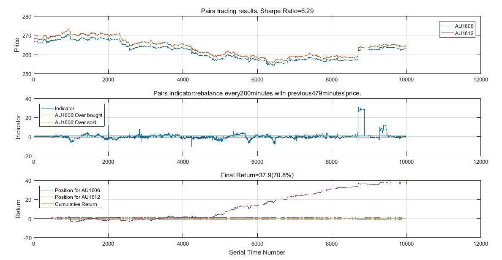

Portfolio Mgnt and Backtest Platform
RA Project，Johns Hopkins Univ
A backtest platform developed for Johns Hopkins Univ, Fetching real-time data from Yahoo Finance, constructing portfolios and optimizing on multiple targets with different constraints.
Try it by clicking here.
2019
Improved Performance Evaluation for Hedge Funds
– Using Bayesian Approach and Seemingly Unrelated Assets
Johns Hopkins Univ
By incorporating seemingly unrelated assets along with longer period by Bayesian approach, the estimation of excess return α can be improved – the precision of estimated α could be improved by 67% and the difference of estimated α between two methods is roughly 0.6~1.0%.
The conclusion was made by deriving a joint dist'n for μ and σ of random variable α, which is a Normal-inverted Wishart Dist'n. The MCMC approach is also included. 2627 hedge funds' data from 2011 to 2019 was invloved.
Really enjoy the research time back in Johns Hopkins. Will continue learning and research things I love.
2019
A Quantitative Strategy Based on AR and Garch Model
Personal Project
Build AR+Garch models for each asset, picking those with high expected return and low volatility, while ensuring selected assets with small correlations. Hold them for a period of time, then sell them out and find next batch of assets.
Modeling this investment policy, using several parameters to find a "best" model to pick up assets automatically. This strategy has much better performance than SPY while maintaining low volatility.
I also made a website to put interactive graphs which can be played with.
If you are interested in it, please feel free to fetch the report.
2018
Futures Arbitrage Platform Based On Machine Learning
Machine Insight, Nanjing Univ
For any two futures, we applied ensemble learning to model the distribution of difference between their log returns. The data we use has a frequency of one minute.
We constructed the platform with well-trained models, providing multiple performance measures for users. Users could invest in different portfolios based on their risk preference.
Our platform was top 8 of 2018 CITI Financial Innovation Application Competition.
2018
Ivory Capital Asia
Analyst
Ivory Capital is a boutique investment banking firm working closly with Morgan Stanley. I Participated in several M&A and equity financing transactions with accumulative transaction value over 300 million dollars.
With the instructions of MD, I also lead a team conducting an advisory case, covering round 3 billion dollars of investment. Nearly one billions dollars of them have been realized so far.

2016
Cointegration Arbitrage on Gold Futures
Personal Project
Targeting on golds futures from different markets and different maturities, check if there exist cointegration relationship, using canlender spread arbitrage and cross market arbitrage to make profits.
2016
HEAVEN-SENT Capital Management Group
Analyst Intern
With instructions from manager, I conducted a research on all Chinese buyout funds with "Publicly listed company + PE" mode. We finished the report and this was the most up-to-date report at that time.